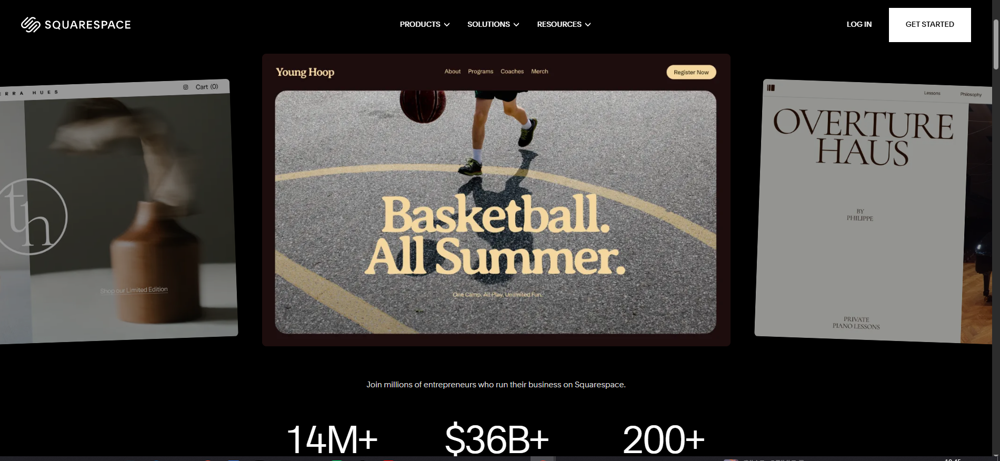
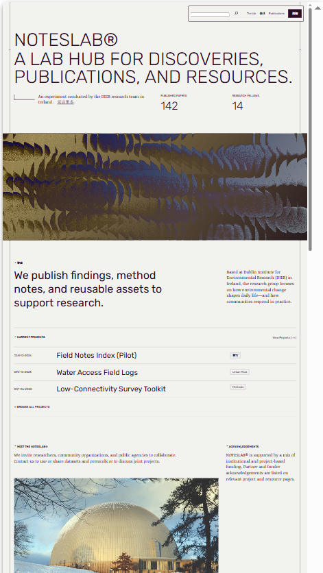
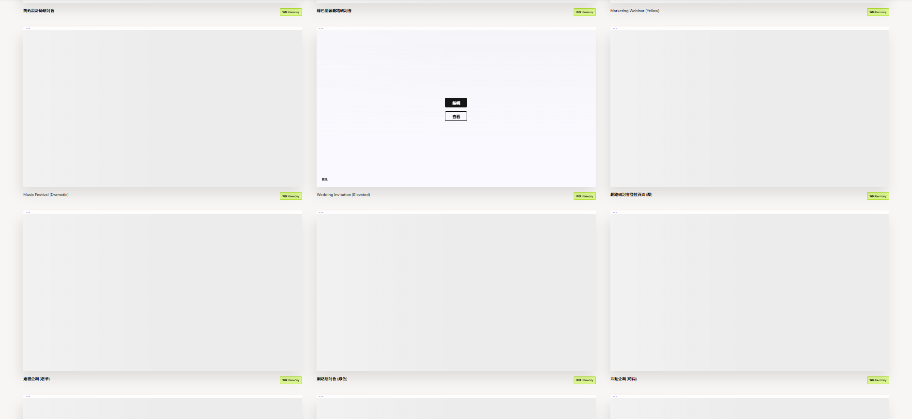

Boss Decision Page
灌木官网及新媒体策划
本页只用于确认两件事：部门宣传网页需要哪些功能，以及最终采用哪一种网站设计风格。确认后即可进入页面细化与资料更新。
网站理念提炼
本次不是重做公司官网，也不是搭建长期运营平台，而是基于灌木文化官网背书，搭建新媒体部门的外部展示与招聘沟通入口。
建议核心表达
让城市文化被看见、被讨论、被记住。新媒体部门的价值，是把城市文化、非遗资源和地方场景，转译为平台愿意推荐、用户愿意观看、合作方愿意传播的短视频内容。
负责权威背书
公司官网展示灌木文化的综合实力、AI 技术、IP 创制和文旅内容能力，新媒体页面只提炼必要背书。
负责部门表达
重点展示部门文化、业务特征、案例方法、招聘入口和未来内容更新方式。
给领导的选择题
选择题用于快速确认执行范围。默认选项是当前阶段最省时、风险最低、后续可扩展的建议方案。
Q1
第一阶段功能做到什么程度？
推荐：C。先满足展示和招聘入口，不先做重后台。
Q2
公司介绍放多深？
推荐：B。避免重复官网，把页面重点留给新媒体部门。
Q3
部门介绍重点强调什么？
推荐：D。兼顾文化价值、平台方法和结果导向。
Q4
案例展示突出哪些信息？
推荐：D。让观看者看到“为什么能做成”。
Q5
招聘功能做到什么程度？
推荐：C。先提高候选人理解度，附件收集可接第三方表单。
Q6
是否需要上传附件？
推荐：B。静态网站不自建文件上传，避免隐私和维护成本。
Q7
后续网页如何更新？
推荐：C。使用当前 GitHub 仓库，免费、即时生效、可对外传播。
三种网站设计风格参考
三个方向不按个人喜好选择，而按团队对外表达目标选择。最终只需从三者中确定一个主方向。

Style A
城市文化纪录片
适合突出短视频作品质感、城市文化氛围、视觉冲击和传播记忆点。
优点：最像新媒体部门。风险：素材质量不稳定时，高级感会下降。

Style B
文化研究档案馆
适合强调文化深度、项目资料沉淀、专业度和文旅合作方可信度。
优点：适合政府、文旅和文化合作场景。风险：冲击力不如视频型网站。

Style C
新媒体增长控制台
适合强调部门方法论、数据结果、平台流量能力和可复制交付。
优点：最利于领导判断业务价值。风险：需要确认可公开展示的数据口径。
Website Layout Plan
网站布局方案：沿用当前 GitHub 仓库发布方式。
不买域名也能对外传播。网页文件放在 GitHub 仓库，GitHub Pages 自动生成公开链接，修改后重新提交即可更新。
免费：公开仓库 + GitHub Pages 不需要额外购买域名或服务器。
即时生效：修改网页、替换图片或附件后，重新提交即可发布新版本。
可对外传播：链接可发给领导、合作方、候选人和面试官查看。
可互动和收集：页面交互由 HTML/CSS/JS 实现；资料收集建议接入第三方表单。